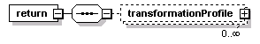
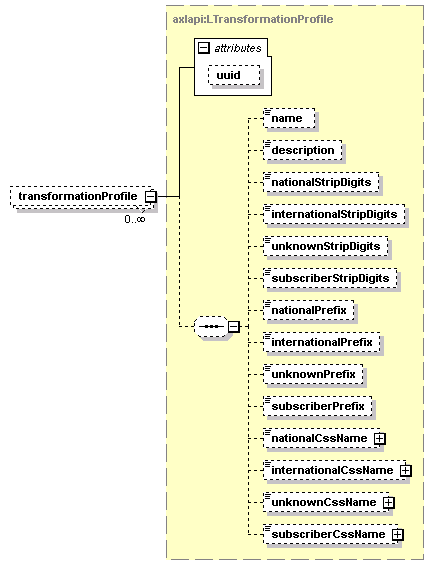

| diagram |  |
||||||||||||
| namespace | http://www.cisco.com/AXL/API/10.5 | ||||||||||||
| type | extension of axlapi:APIResponse | ||||||||||||
| properties |
|
||||||||||||
| children | return | ||||||||||||
| used by |
|
||||||||||||
| attributes |
|
||||||||||||
| source | <xsd:complexType name="ListTransformationProfileRes"> <xsd:complexContent> <xsd:extension base="axlapi:APIResponse"> <xsd:sequence> <xsd:element name="return"> <xsd:complexType> <xsd:sequence> <xsd:element name="transformationProfile" type="axlapi:LTransformationProfile" minOccurs="0" maxOccurs="unbounded"/> </xsd:sequence> </xsd:complexType> </xsd:element> </xsd:sequence> </xsd:extension> </xsd:complexContent> </xsd:complexType> |
element ListTransformationProfileRes/return
| diagram |  | ||
| properties |
|
||
| children | transformationProfile | ||
| source | <xsd:element name="return"> <xsd:complexType> <xsd:sequence> <xsd:element name="transformationProfile" type="axlapi:LTransformationProfile" minOccurs="0" maxOccurs="unbounded"/> </xsd:sequence> </xsd:complexType> </xsd:element> |
element ListTransformationProfileRes/return/transformationProfile
| diagram |  | ||||||||||||
| type | axlapi:LTransformationProfile | ||||||||||||
| properties |
|
||||||||||||
| children | name description nationalStripDigits internationalStripDigits unknownStripDigits subscriberStripDigits nationalPrefix internationalPrefix unknownPrefix subscriberPrefix nationalCssName internationalCssName unknownCssName subscriberCssName | ||||||||||||
| attributes |
|
||||||||||||
| source | <xsd:element name="transformationProfile" type="axlapi:LTransformationProfile" minOccurs="0" maxOccurs="unbounded"/> |
XML Schema documentation generated by XMLSpy Schema Editor http://www.altova.com/xmlspy